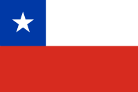

Nombre del país: Chile
Datos Generales
Chile es un país largo y angosto que se extiende por el borde occidental de Sudamérica, con más de 6,000 km de costa en el océano Pacífico. Santiago, su capital, se ubica en un valle rodeado de los Andes y la cordillera de la Costa.
En la Plaza de Armas de la ciudad, bordeada de palmeras, se encuentra la catedral neoclásica y el Museo de Historia Nacional. El enorme Parque Metropolitano cuenta con piscinas, un jardín botánico y un zoológico